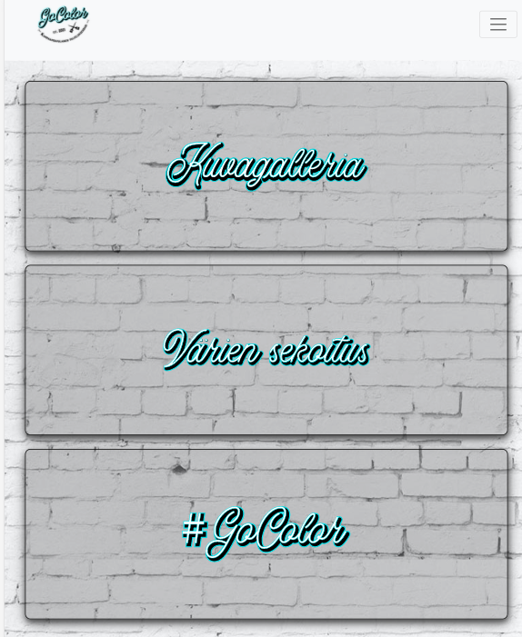
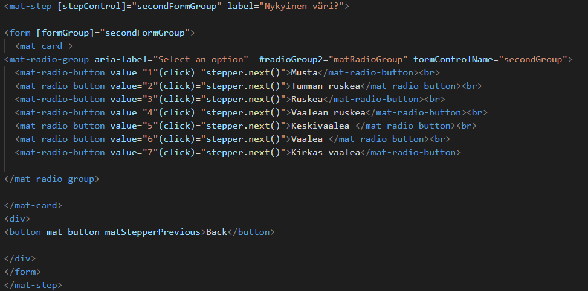
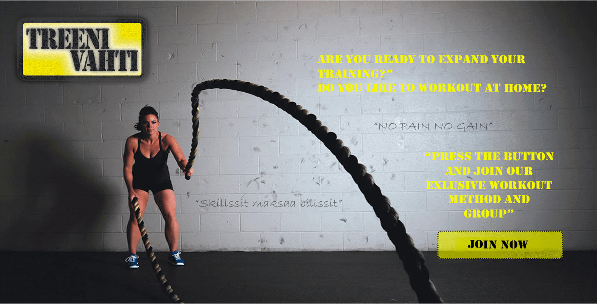
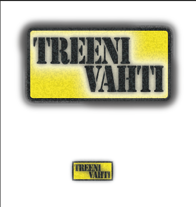
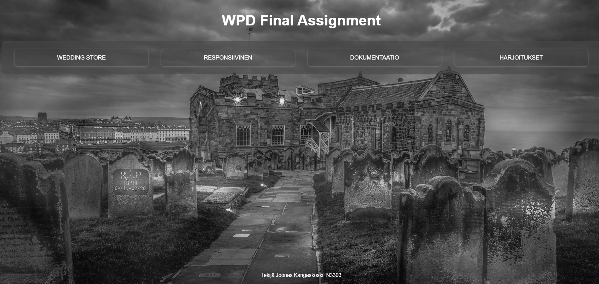
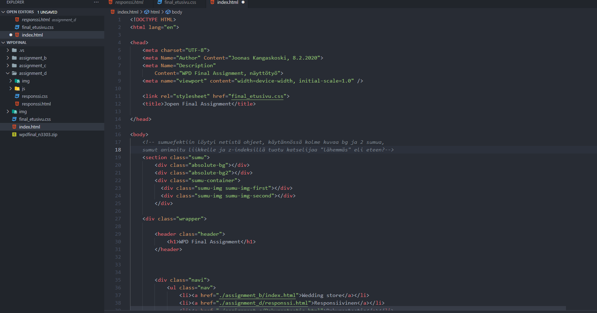
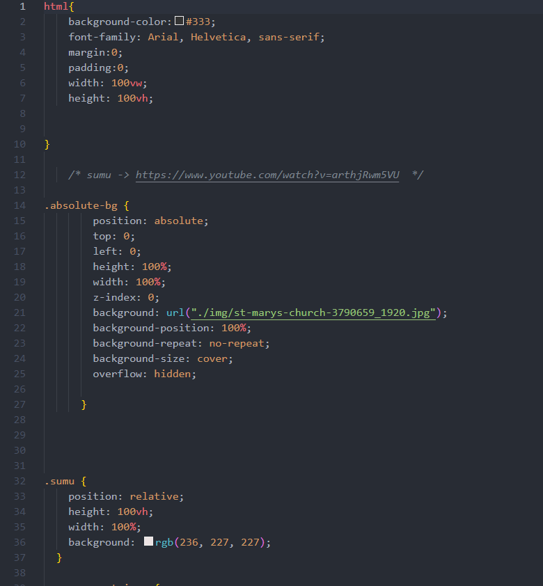

Olen Joonas, 36-vuotias mies Jyväskylästä. Nykyiseltä ammatiltani ensihoitaja ja työskennellyt ensihoidon parissa lähes 10 vuotta.
Ammatinvaihto mielessä, lähdin opiskelemaan JAMK:iin tietojenkäsittelyä, nyt opintoja takana 3 vuotta. Mielenkiintoni tietokoneisiin ja tietokoneilla tekemiseen on lähtöisin
lapsuudesta ja nyt sit ajattelin tehdä toisestakin mielenkiinnon kohteestani ammatin. Olen myös kolmen lapsen isä
ja perheen parissa vietän aikaa opiskelun ja töiden ohessa. Harrastuksiini kuuluu fyysisen ja henkisen kunnon ylläpitäminen
mm. lenkkeilemällä koirien kanssa, kuntosali sekä nyt uutena villityksenä frisbeegolf.
Kurssien ja kurssitöiden lisäksi ei minulla ole ollut muita alaan liittyviä projekteja.
Ticorporate- GoColor
Projektissa tehtiin sovellusta kampaamoalalle, toimin suunnittelijana ja yhtenä ohjelmoijista.
Toteuksessa käytettiin Angularia, josta ei aiempaa kokemusta.


Web-liiketoiminta - Treenivahti
Projektissa suunniteltiin sovellusta myyntiin sekä tehtiin liiketoimintasuunnitelma.
Suunnittelin mm. layouttia ja logon Adoben ohjelmilla.


HTML & CSS
HTML & CSS peruskurssilla tehtiin lopputyöksi omat sivut



Tulevaisuus
Tarkoituksenani olisi päästä tulevana syksynä harjoitteluun ohjelmointi firmaan. Jos paikkoja on tiedossa, saa vinkata. Tulevan vuoden aikana tulisi tehdä harjoittelun lisäksi myös opinnäytetyö
sekä vielä jäljellä olevat kurssit. Kaiken muun ohella aion myös kehittää itseäni luomalla omia projekteja enkä freelancer-hommistakaan kieltäydy.